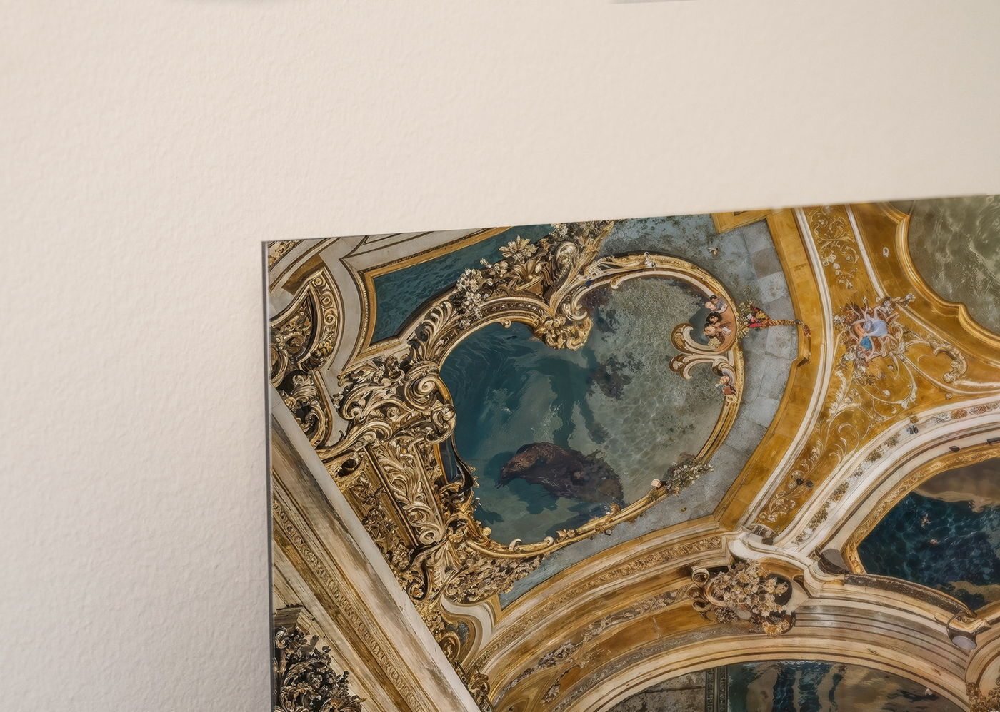
Kaschierung unter Acrylglas
Stärke 2 mm glänzend, rahmenlos — die hochglänzende Oberfläche trägt Farbtiefe und Kontrast bis an die Bildkante.
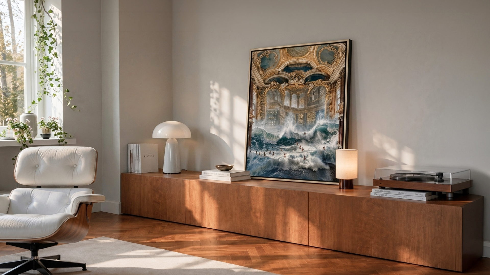
ART DROP
15.–17. AUGUST
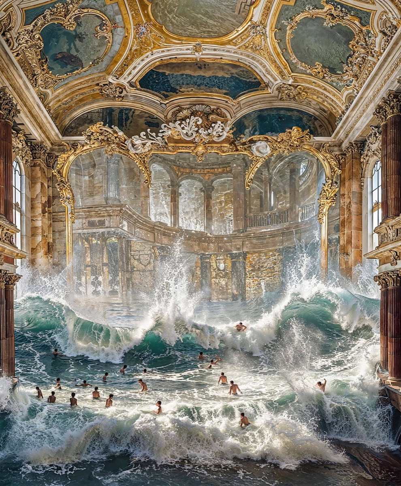
EARLY ACCESS IN
Tomislav Marcijuš’ „Baroque Pools II“; ein barocker Saal, den die Brandung erobert.
Drei Tage verfügbar — dann schließt die Edition.
Die Edition ist beendet
Baroque Pools II war auf 100 Exemplare limitiert. Melde dich an, um den nächsten Art Drop nicht zu verpassen.
Du bist dabei.
Deine Einladung zum Early Access erreicht dich am 14. August um 09:00 Uhr.
Wir melden uns, sobald der nächste Art Drop startet.

Stärke 2 mm glänzend, rahmenlos — die hochglänzende Oberfläche trägt Farbtiefe und Kontrast bis an die Bildkante.
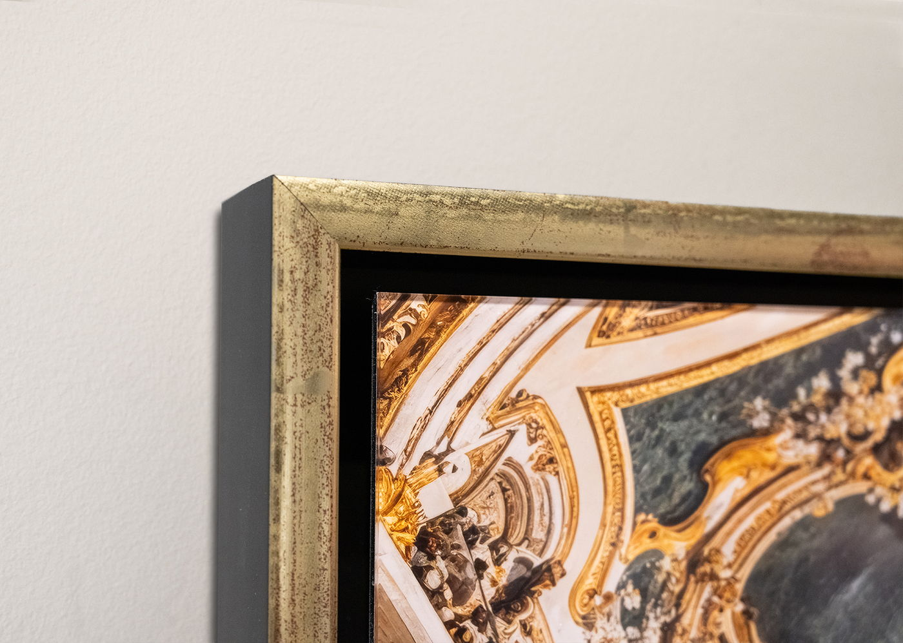
Schwarz-Gold, Profilbreite 12 mm, mit Acrylglas glänzend. Das Werk steht frei in der Schattenfuge. Außenmaß 83,8 × 69,8 cm.
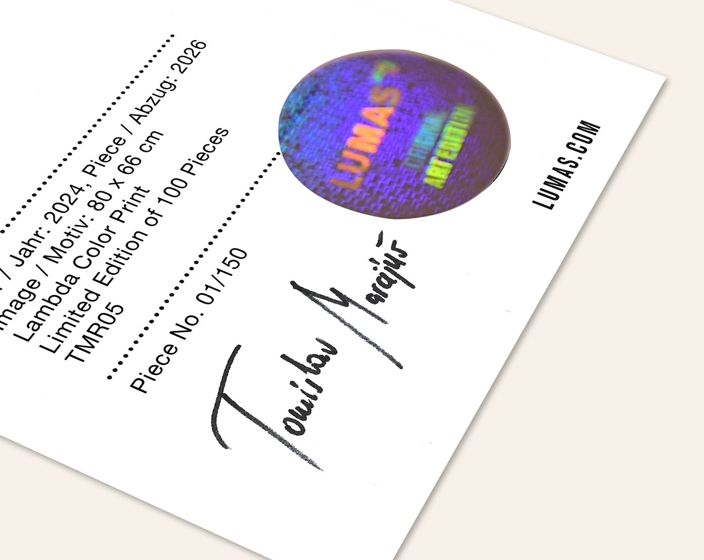
Jedes Exemplar wird von Tomislav Marcijuš signiert und trägt ein nummeriertes Zertifikat. Nach 100 Exemplaren wird die Edition geschlossen.
„Ich finde meine Kunst in alltäglichen Dingen, in Details, die oft unbemerkt bleiben – in Gesprächen und Kindheitserinnerungen.“
Tomislav Marcijuš ist ein kroatischer bildender Künstler und Fotograf, bekannt für seine poetische und emotional vielschichtige Bildsprache. Seine Praxis kreist um Erinnerung, Zugehörigkeit, Familie und Zeit — und verwebt persönliche Erfahrungen mit kulturellen und historischen Schichten.
Mit 80 × 66 cm findet er über einem Sideboard genauso seinen Platz wie an einer freien Wand — und zieht den Blick in die Tiefe.
JETZT KAUFEN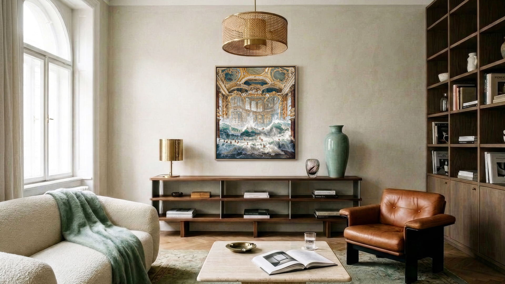
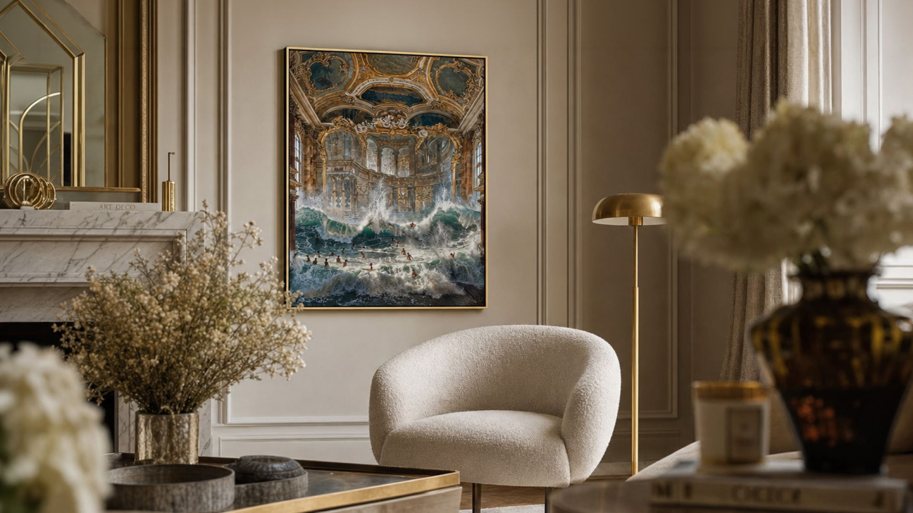
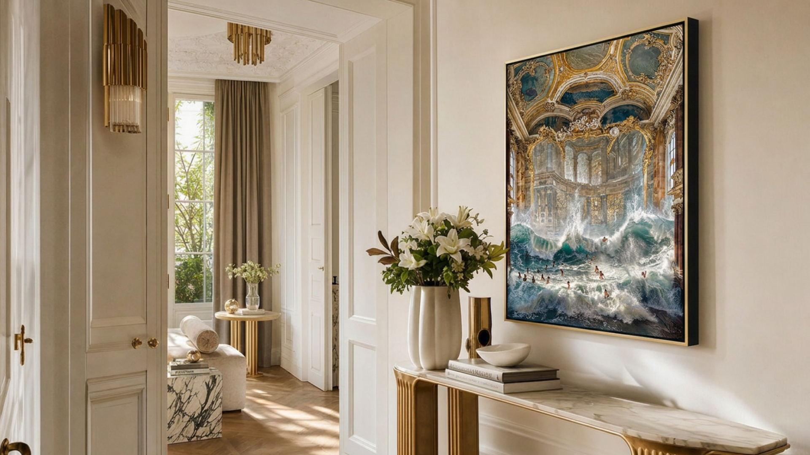
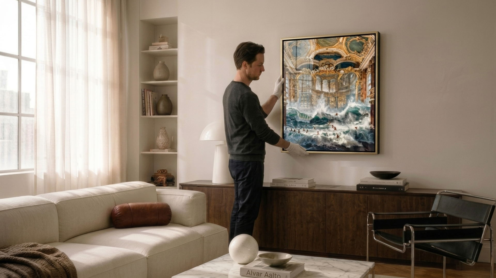
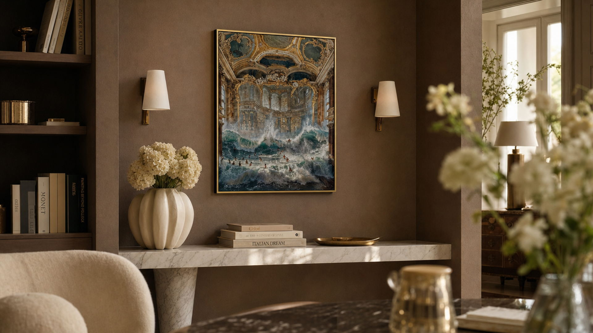
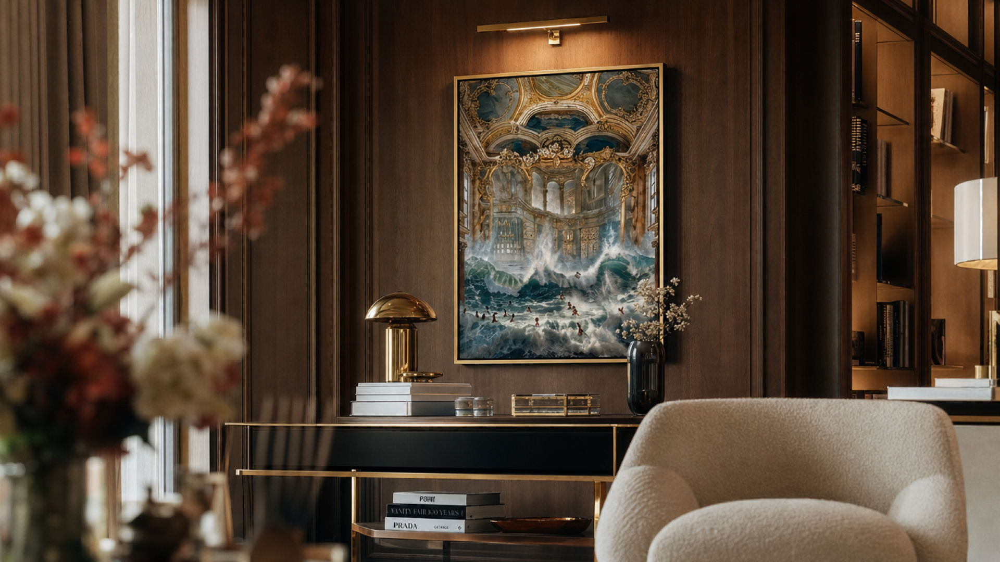
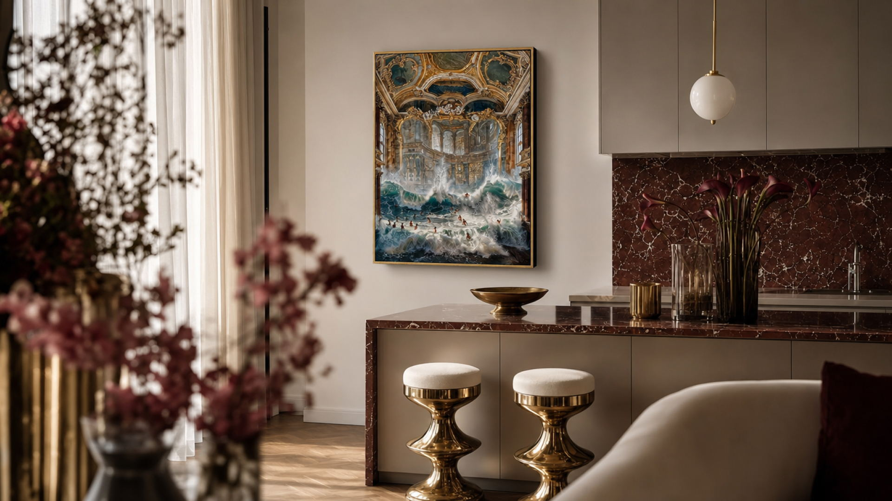
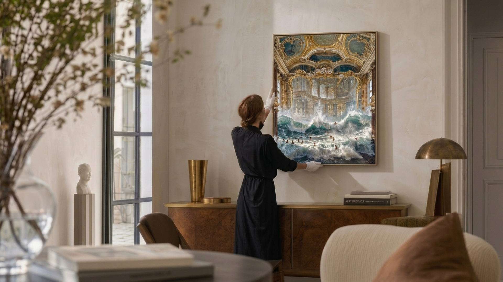
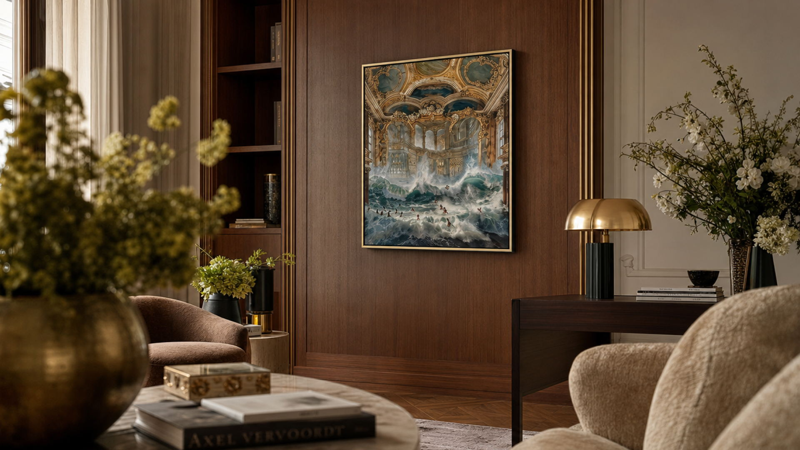
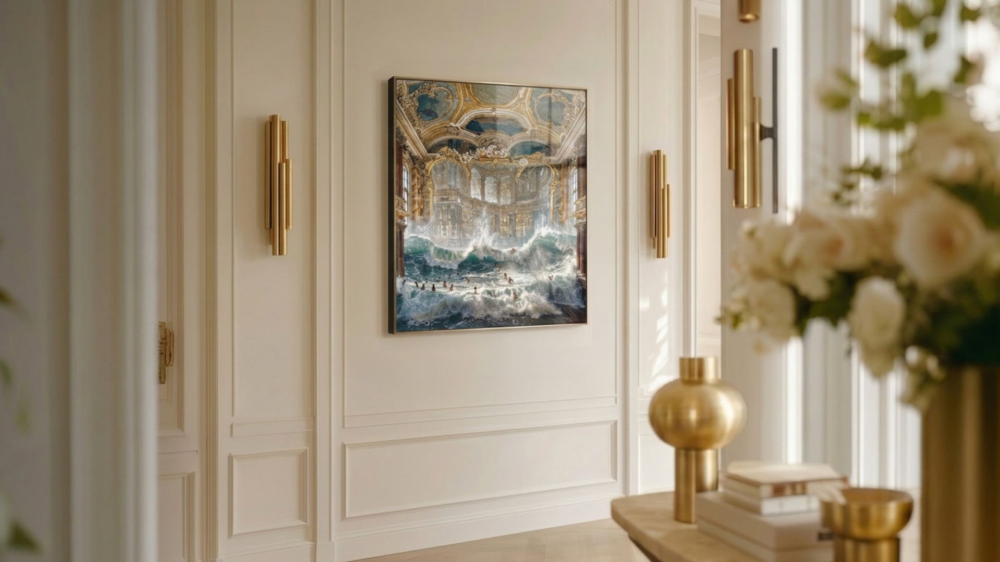
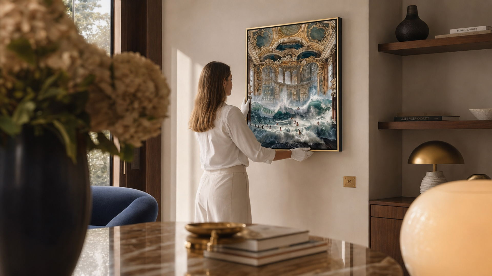
Zwischen barocker Theatralik, stiller Intimität und digitaler Illusion entstehen Szenen, die vertraut wirken und doch nie existiert haben.
Die Arbeiten greifen Marcijuš’ langjährige fotografische Auseinandersetzung mit Badehäusern, Kirchen und Villeninterieurs auf, insbesondere in Italien, und verdichten diese Begegnungen zu spekulativen Szenarien. Wasser fungiert dabei zugleich als ordnende wie als auflösende Kraft: Es mildert die Strenge barocker Formen, verleiht ihnen Leichtigkeit und eröffnet neue Möglichkeiten der Bewegung.
330.000 zufriedene Kunden
seit 2004
Werke vor Ort ansehen
60 Tage Rückgaberecht
ohne Angabe von Gründen
Melde dich an und erhalte am 14. August um 09:00 Uhr Zugang,
bevor die Edition öffentlich verfügbar ist.
von 100 verkauft
Die Edition ist bis zum 17. August, 23:59 Uhr verfügbar.
JETZT KAUFENBaroque Pools II war auf 100 Exemplare limitiert. Melde dich an, um den nächsten Art Drop nicht zu verpassen.
Du bist dabei.
Deine Einladung zum Early Access erreicht dich am 14. August um 09:00 Uhr.
Vier weitere Kapitel, jedes limitiert auf 100 Exemplare.